天花板是一條河，空間的節奏跟著它流動。
The ceiling is a river; the space's rhythm flows with it.
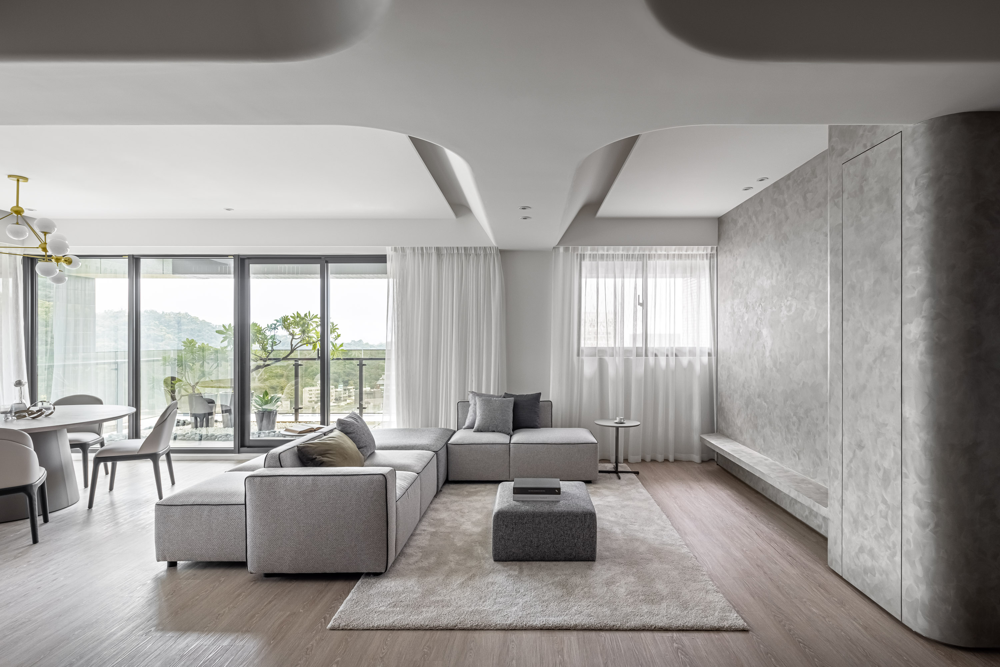
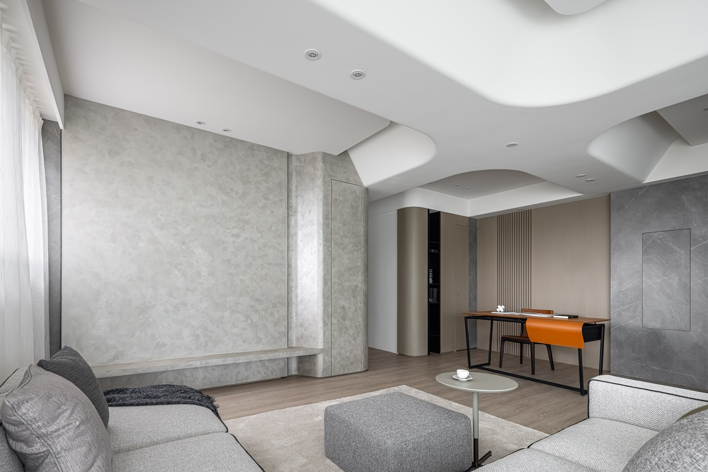


01
這個案子的天花板不是平面——它是一組連續的弧形曲面，從玄關開始展開，經過客廳，一路延伸到廚房中島上方。曲面的起伏跟著空間機能轉變：在客廳上方稍微抬高，在中島上方壓低，用高度的變化界定區域，而不需要任何隔間。
The ceiling here is not flat — it is a series of continuous curved surfaces unfolding from the entrance through the living room to above the kitchen island. The undulation follows functional shifts: rising slightly over the living area, dipping over the island, defining zones through height rather than partitions.
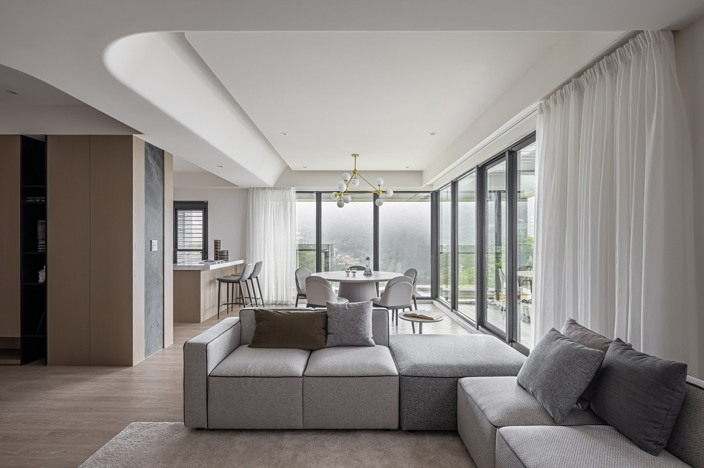
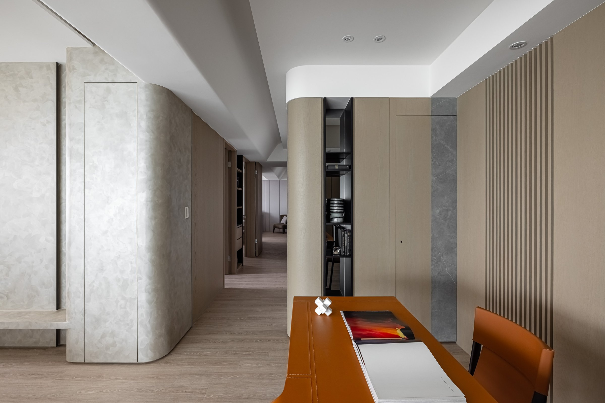
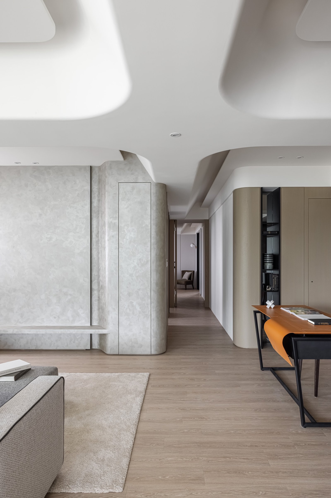
02
中島以深藍色烤漆搭配石材檯面，是整個淺灰空間裡最沉的一筆。這個顏色不是裝飾性的跳色，而是重心——當空間裡大部分的面都在退讓的時候，需要一個元素站出來，讓人知道這裡是廚房的核心。
The island — deep-navy lacquer with stone top — is the heaviest stroke in an otherwise pale-grey space. This color is not a decorative accent but a center of gravity. When most surfaces are receding, one element must step forward to declare itself the kitchen's core.
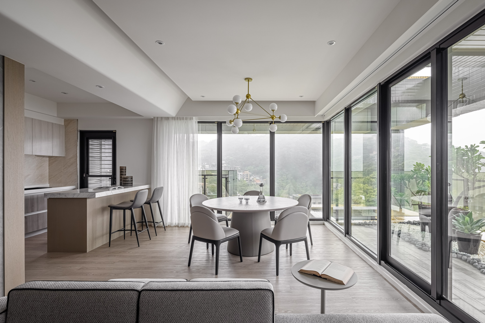
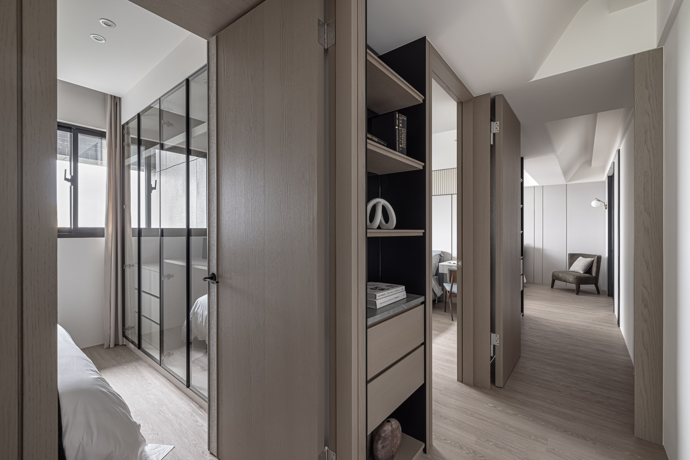
03
礦物塗料與水磨石地坪構成空間的底色。兩種材質都有細微的顆粒感，在不同光線下呈現不同的深淺——白天偏冷，夜間偏暖。這種會隨光線改變的材質，讓空間在一天之內有兩種表情。
Mineral coating and terrazzo flooring form the space's base tone. Both materials carry fine granularity that shifts shade under different light — cooler by day, warmer at night. Materials that change with light give the space two expressions within a single day.
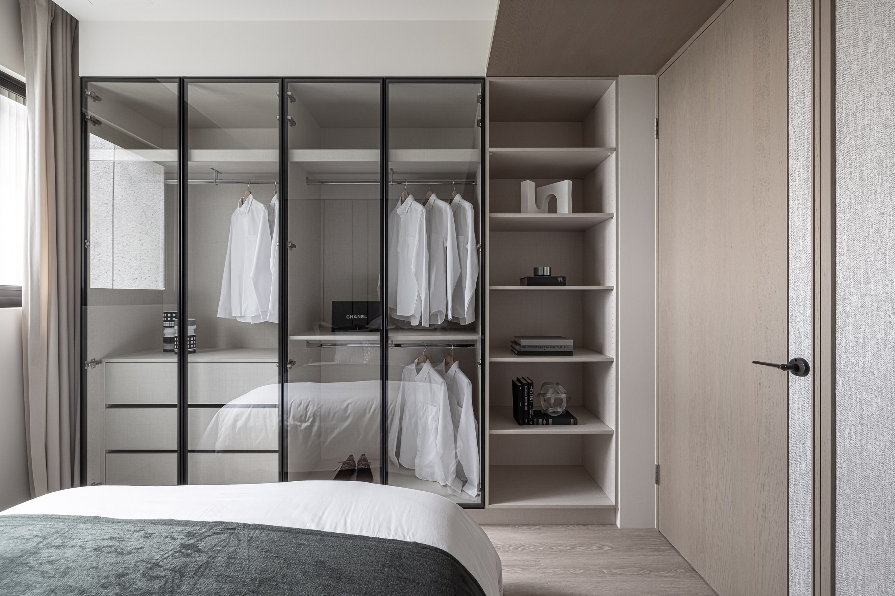
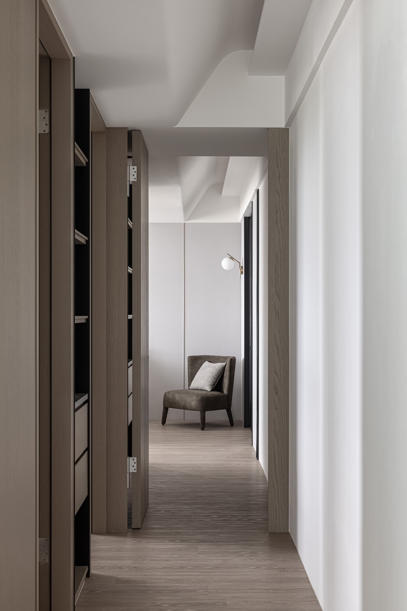
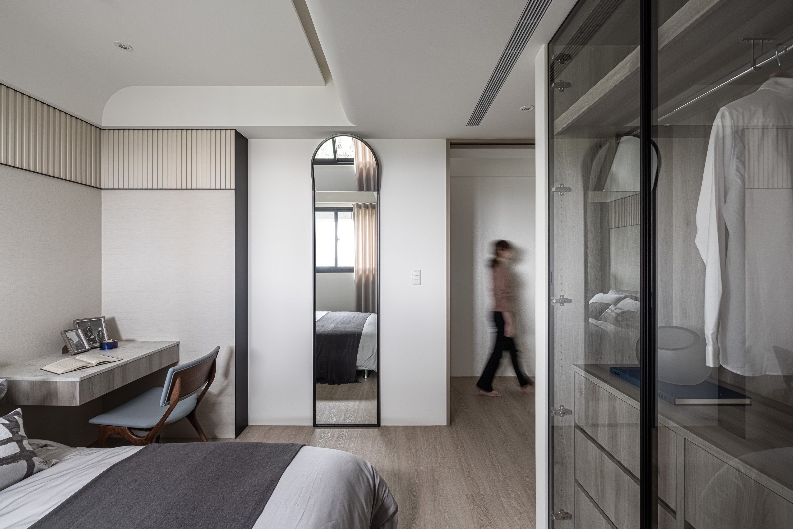
04
玄關處的天然石材牆從地面延伸到天花，灰白色紋路在間接光下浮現。黃色單椅與橘色書桌是刻意安排的兩個亮點——在一個以灰階為主的空間裡，色彩的出現需要被控制，少才有效。
Natural stone at the entrance runs floor to ceiling; grey-white veins surface under indirect light. The yellow chair and orange desk are deliberate accents — in a space governed by greyscale, color must be controlled. Less is what makes it work.
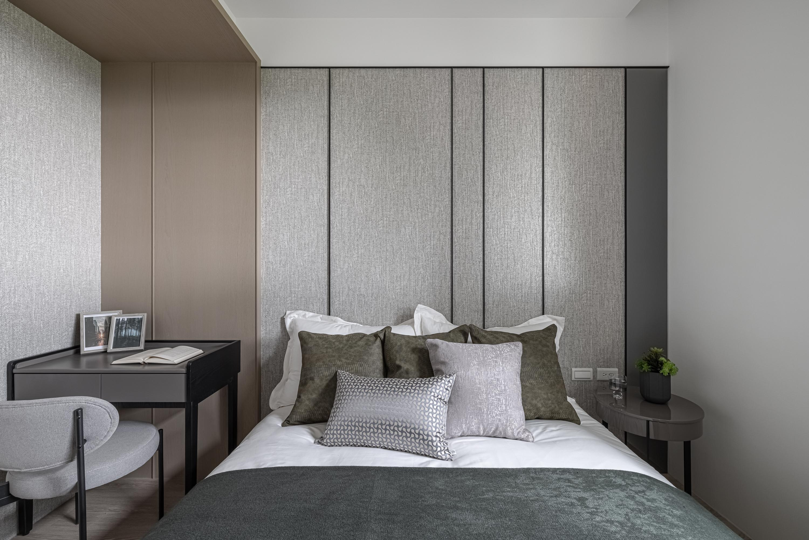
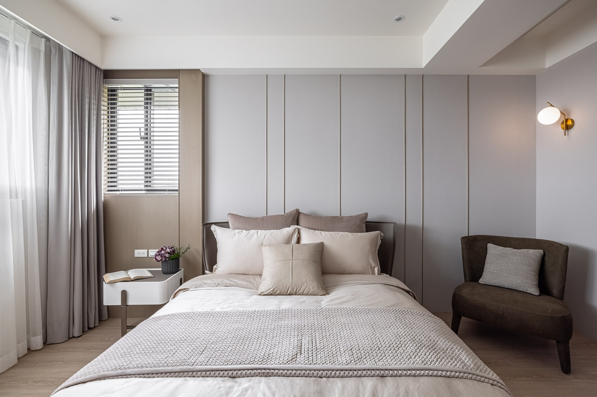
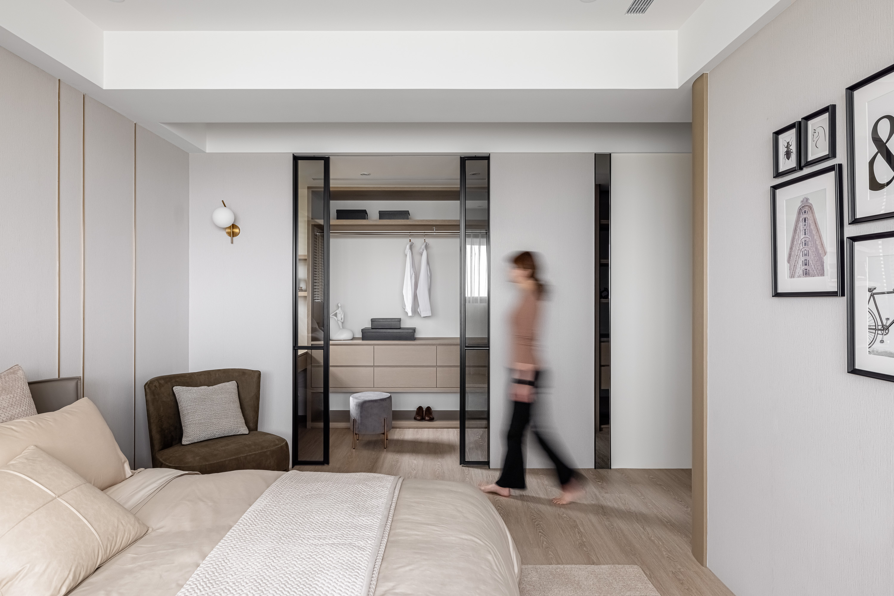
05
這個家的設計用一條連續的天花曲線，取代了傳統的隔間邏輯。你不會在走動的時候經過門框或感覺到空間的切換——只有天花的高度在變化，光線在跟著轉彎，地坪的材質在腳下安靜地過渡。整個家是一條路徑，不是一組房間。
This home replaces traditional partition logic with one continuous ceiling curve. You never pass through a door frame or feel the space switch — only the ceiling height changes, light turns with it, and the floor transitions quietly underfoot. The entire home is a path, not a set of rooms.
All Photos